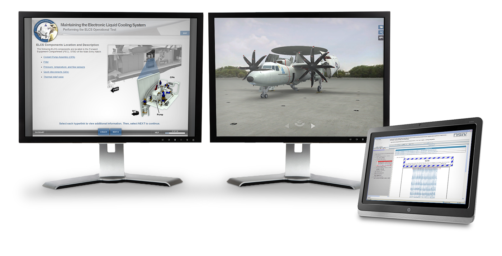
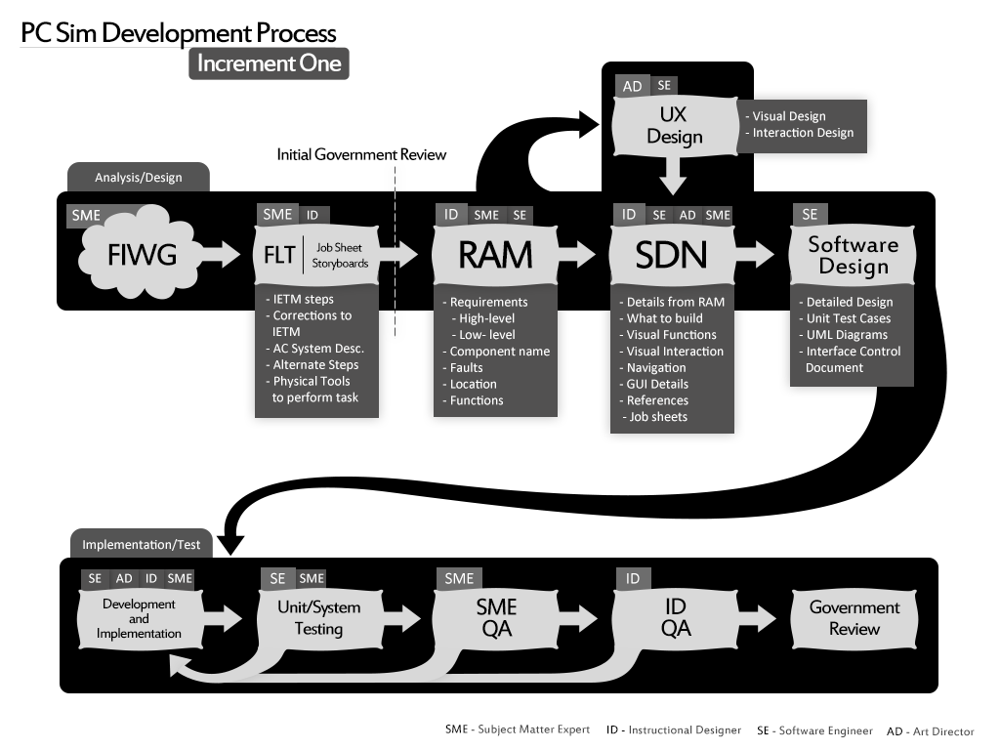
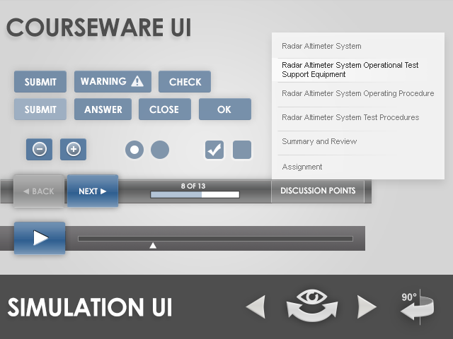
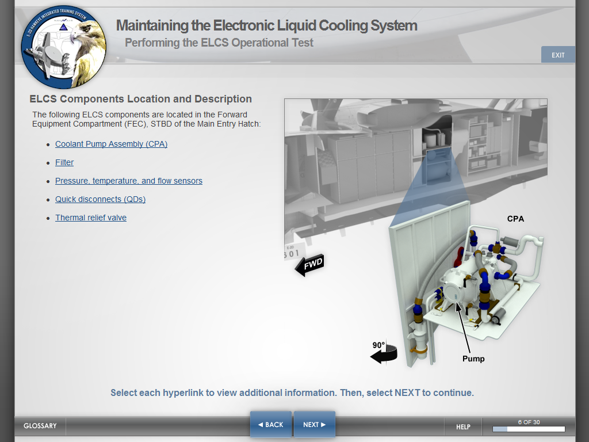
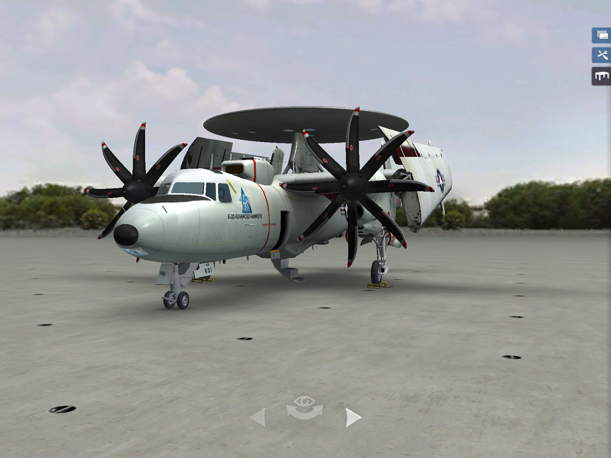

3y
Case study
E2-D Hawkeye Training
This contract focused on the interface and visual experience for the E2-D Advanced Hawkeye aircrew and maintenance training program. The work was bigger than a single screen set: it required a durable design language across courseware, PC-based simulation, and supporting training materials, while also keeping a complex defense program on schedule under difficult delivery constraints.
tl;dr
- The work covered interface and visual implementation across courseware, PC simulation, and supporting training materials for the E2-D program.
- I led a team of 10 artists while also contributing 3D models, textures, lighting, and environment work directly.
- The original waterfall plan was projected to miss milestones and extend roughly six months past the contract expectation.
- A blended waterfall-plus-agile roadmap helped rebalance the schedule, and the program delivered three months earlier than expected.
- The resulting interface system held up well enough to be reused by other naval training curricula, including Northrop Grumman’s Triton program.
What We Learned
The Work Was a System, Not a Screen Set
The project covered the design and implementation of the visual experience across courseware and PC-based simulation programs used in CNATTU classrooms. That meant the challenge was much broader than shipping a few polished interfaces.
The program needed to feel coherent across multiple training modes, each with its own interaction patterns, technical constraints, and instructional needs. My role covered both leadership and execution, including team direction as well as hands-on work in 3D modeling, texturing, lighting, and rendered environments.
That mix of responsibilities mattered because the quality bar had to hold at both the systems level and the artifact level. The training experience had to feel unified, not pieced together by medium.


Delivery Planning Became a Design Problem Too
Under the original contract, a pure waterfall approach would have left the program substantially behind schedule and vulnerable to missed milestones. The issue was not abstract process preference. It was concrete delivery risk.
I proposed a blended development model that kept the necessary structure of the contractual environment while introducing a more agile cadence through design, iteration, and implementation. That change helped the team re-sequence the work around what actually needed to happen to deliver.
The result was material: the team delivered three months earlier than expected. In this case, workflow design was part of the product outcome. The right production model made the visual and interaction work more achievable.
The Interface Had to Survive Time, Not Just Pass Review
Because the program was expected to remain in use for years, the interface could not depend on trend-driven decisions or short-lived novelty. It had to remain legible, stable, and teachable over time.
The style guide became a key part of that durability. It created a visual framework that could support both courseware and simulation while keeping the training environment consistent enough to reduce unnecessary cognitive switching for learners.

The strength of that system was visible after delivery too. The UI approach was later adopted in other naval training curricula, including the Triton UAS program, which validated that the work had durability beyond the original contract.
Good Training Interfaces Make Complex Material Easier to Navigate
The individual screens make the broader design goals easier to see. The courseware experience needed to guide technicians through dense procedural information without becoming visually noisy or hard to follow.
The simulation environment needed a different kind of clarity. It had to support exploration and orientation inside a more spatial, model-driven environment while still feeling connected to the rest of the curriculum.

Together, those screens show the larger product challenge: make high-complexity training materials feel structured and usable across learning formats, not just technically complete.

Outcome of the Work
The E2-D program succeeded because the design work solved more than one class of problem at a time. It created a coherent interface language across courseware and simulation, stabilized the production model enough to deliver confidently, and produced assets strong enough to support long-term training use.
The most concrete outcome was delivery: the program shipped three months earlier than expected after the roadmap was reworked. But there was also a durability outcome. The UI system held up well enough to be reused in later naval training programs.
Implications
- A durable training interface needs to be designed as a system across media, not as isolated screens.
- Delivery methodology can materially affect product quality when the original schedule model is unrealistic.
- Reusable visual frameworks create value beyond a single contract when they hold up under long-term operational use.
This project remains one of the clearest examples in my work of how interface design, production planning, and implementation craft can reinforce each other when the product environment is complex and long-lived.
Continue Exploring
Contact
Want to talk through the Hawkeye training program?
The interface system, the blended delivery roadmap, or how a reusable visual framework outlived a single contract — happy to get into any of it.
A good conversation is usually a better start than a formal intake form.